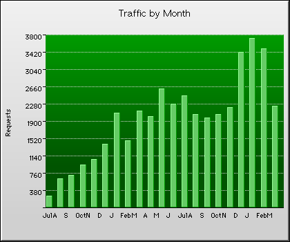

|  | |
(21) Monthly Transmission Statistics |
||||||
|---|---|---|---|---|---|---|
| Requests | % | Bytes | % | Pages | Errors | Month |
| 266 | 0.6% | 763.8K | 0.1% | 250 | 9 | Jul 2000 |
| 681 | 1.6% | 3.1M | 0.4% | 641 | 1 | Aug 2000 |
| 740 | 1.8% | 4.8M | 0.7% | 712 | 7 | Sep 2000 |
| 960 | 2.3% | 10.8M | 1.5% | 921 | 39 | Oct 2000 |
| 1,083 | 2.6% | 22.1M | 3.0% | 1,061 | 26 | Nov 2000 |
| 1,408 | 3.4% | 28.7M | 3.9% | 1,367 | 24 | Dec 2000 |
| 2,113 | 5.1% | 63.9M | 8.7% | 2,076 | 68 | Jan 2001 |
| 1,496 | 3.6% | 32.1M | 4.4% | 1,463 | 59 | Feb 2001 |
| 2,159 | 5.2% | 34.4M | 4.7% | 2,139 | 54 | Mar 2001 |
| 2,024 | 4.9% | 19.0M | 2.6% | 2,023 | 86 | Apr 2001 |
| 2,625 | 6.3% | 43.2M | 5.9% | 2,612 | 86 | May 2001 |
| 2,290 | 5.5% | 38.9M | 5.3% | 2,272 | 83 | Jun 2001 |
| 2,498 | 6.0% | 39.6M | 5.4% | 2,454 | 83 | Jul 2001 |
| 2,074 | 5.0% | 38.0M | 5.2% | 2,040 | 75 | Aug 2001 |
| 1,997 | 4.8% | 37.9M | 5.2% | 1,962 | 93 | Sep 2001 |
| 2,089 | 5.0% | 40.4M | 5.5% | 2,041 | 52 | Oct 2001 |
| 2,229 | 5.3% | 23.8M | 3.2% | 2,212 | 70 | Nov 2001 |
| 3,447 | 8.3% | 71.9M | 9.8% | 3,373 | 96 | Dec 2001 |
| 3,741 | 9.0% | 65.1M | 8.9% | 3,679 | 165 | Jan 2002 |
| 3,533 | 8.5% | 70.4M | 9.6% | 3,475 | 178 | Feb 2002 |
| 2,260 | 5.4% | 44.8M | 6.1% | 2,226 | 102 | Mar 2002 |
| 1,986 | 4.8% | 34.9M | 4.8% | 1,952 | 69 | Average |
| 41,713 | 100.0% | 733.6M | 100.0% | 40,999 | 1,456 | Totals |
Copyright © Active Concepts, 1997-99